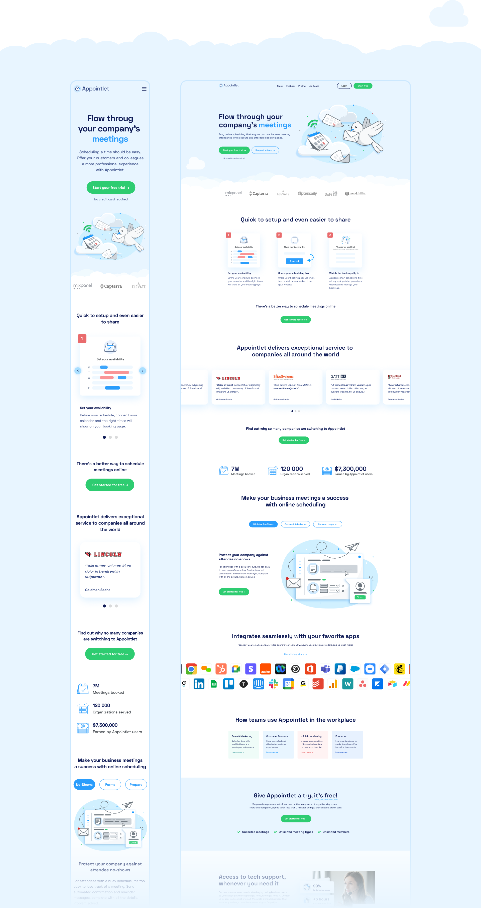
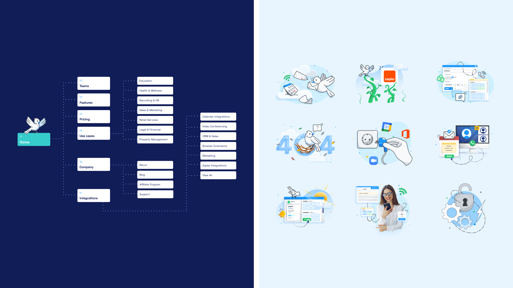
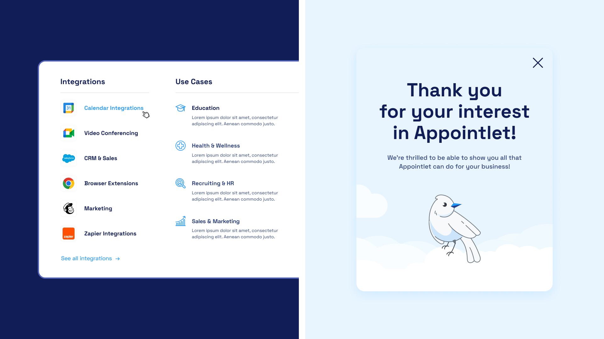
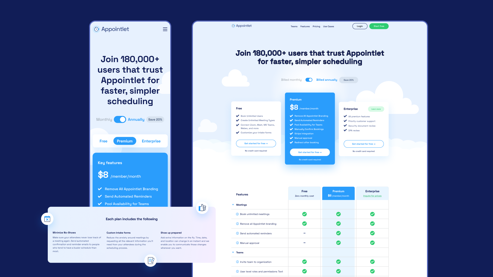
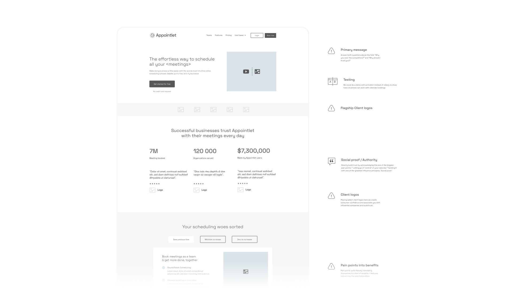

Appointlet · via NewDay agency · 2024 · Remote, USA
Two questions, answered on every page
Redesigning a scheduling SaaS’s marketing site so trust and differentiation stopped being empty slots in a wireframe.
Results
+40% customer satisfaction
Measured after the redesigned site shipped, per the agency’s engagement report.
9 templates, 1 proof system
Numbers, named clients, and quotes placed deliberately across every marketing page, not just the homepage.
2 questions, above the fold
Every hero now states why Appointlet over the competition, and why to trust it, before the scroll.
Situation
Appointlet is a scheduling SaaS competing for the same buyers as much larger names. Its marketing site had the standard shape — hero, logo strip, feature list — but none of it answered why a visitor should choose Appointlet specifically, or trust it with their calendar.
A full visual overhaul wasn’t the fix on its own. The wireframes already had slots reserved for proof; nobody had decided what belonged in them.
Deciding insight
Annotating the existing wireframes page by page surfaced the real gap: every template had a placeholder for trust — client logos, a stat, a quote — and nearly every one of them was empty or generic.
That reframed the brief from “redesign the site” to “decide what goes in every proof slot, on every page, and make sure it answers one of two questions.”
Research
Catalogued all nine templates against those two questions — why Appointlet, why trust it — and grounded the proof in what the redesign itself delivered: +40% customer satisfaction, +30% appointment bookings, and +25% team productivity within three months of launch.

Approach
Rebuilt the sitemap and mega-navigation around Use Cases and Integrations so different buyers could self-select fast, then placed a specific proof point — a stat, a named client, or a quote — in every slot the wireframes had left generic, on every template.
Carried a single bird mascot through the small moments — the booking confirmation, the 404 — so the brand stayed recognizable even off the main path.



